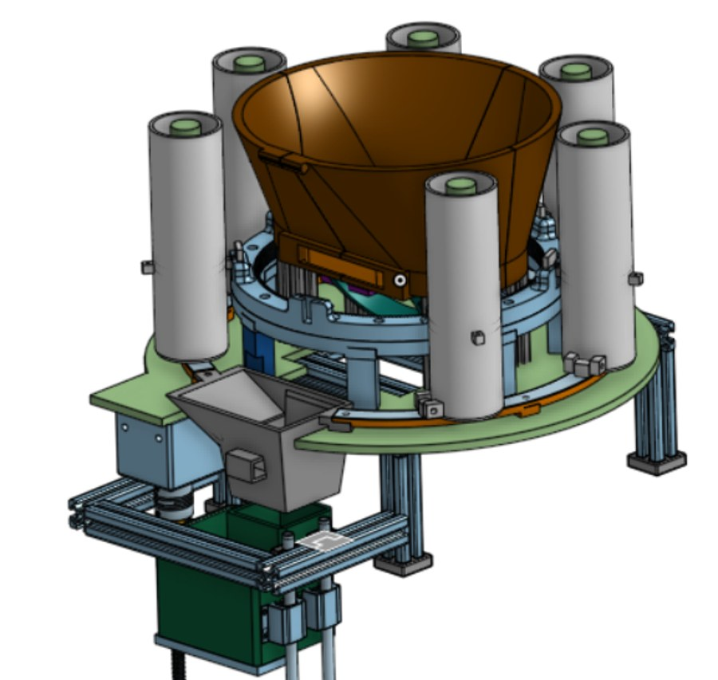

Project
Growver
A tree-planting robot that automates digging, planting, and tamping to help healthy saplings get in the ground faster.
Auto Dig
Auto Plant
Auto Tamp

A tree-planting robot that automates digging, planting, and tamping to help healthy saplings get in the ground faster.
Manual tree planting is labor-intensive and hard to scale, so Growver needed to combine digging, seedling-placement, and tamping into a single chassis without becoming bulky or power-hungry.
